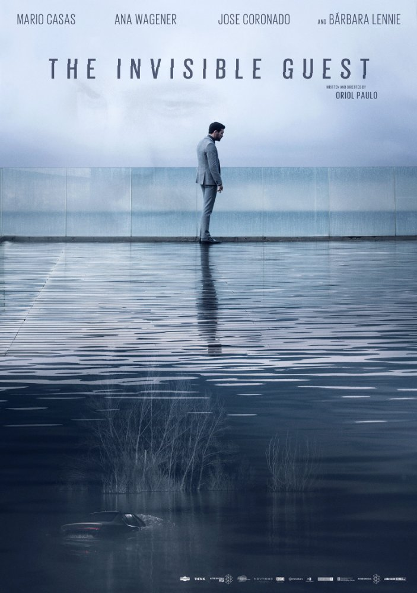

看不见的客人

概况
导演: 奥里奥尔·保罗
编剧: 奥里奥尔·保罗
主演: 马里奥·卡萨斯 / 阿娜·瓦格纳 / 何塞·科罗纳多 / 巴巴拉·莱涅 / 弗兰塞斯克·奥雷利亚 / 更多...
类型: 剧情 / 悬疑 / 惊悚 / 犯罪
制片国家/地区: 西班牙
语言: 西班牙语
上映日期: 2017-09-15(中国大陆) / 2016-09-23(奇幻电影节) / 2017-01-06(西班牙)
片长: 106分钟
剧情简介
艾德里安（马里奥·卡萨斯 Mario Casas 饰）经营着一间科技公司，事业蒸蒸日上，家中有美丽贤惠的妻子和活泼可爱的女儿，事业家庭双丰收的他是旁人羡慕的对象。然而，野心勃勃的艾德里安并未珍惜眼前来之不易的生活，一直以来，他和一位名叫劳拉（芭芭拉·蓝妮 Bárbara Lennie 饰）的女摄影师保持着肉体关系。某日幽会过后，两人驱车离开别墅，却在路上发生了车祸，为了掩盖事件的真相，两人决定将在车祸中死去的青年丹尼尔联同他的车一起沉入湖底。之后，劳拉遇见了一位善良的老人，老人将劳拉坏掉的车拉回家中修理，然而，令劳拉没有想到的是，这位老人，竟然就是丹尼尔的父亲。